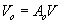
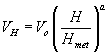
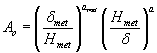

CONTAM enables you to incorporate the effects of weather on a building. Weather parameters include ambient temperature, barometric pressure, wind speed, wind direction and also outdoor contaminant levels. The type of weather data you require for a simulation depends on the type of simulation you are performing, whether you want to account for the effects of wind, and whether or not you are simulating contaminants. If you are performing a steady-state airflow simulation, you will only need steady state weather and wind data. If you are performing a transient airflow simulation, you can use either steady state or transient weather data. Transient weather data is implemented through the use of weather files or WTH files. If you are performing transient contaminant simulations, you can use either steady-state or transient ambient contaminant data as well. Transient ambient contaminant data is implemented via the use of ambient contaminant files or CTM files (See Contaminant Files).
NOTE: Both the WTH and CTM files assume a single set of values for the ambient zone at any given point in time, i.e., there is no spatial variation in either the pressure or contaminant fields. However, CONTAM also allows the use of transient wind pressure and contaminant files (WPC file) with which you can account for spatial variation in both the pressures and contaminant concentrations over the surface of a building envelope (See Working with WPC Files).
Steady State Weather
When you use steady state weather data, ContamX keeps the ambient temperature, barometric pressure, wind speed and direction and relative humidity constant during a simulation. Detailed descriptions of these parameters are given in the following sections.
Transient Weather
You can use transient weather data to simulate the changing outdoor weather and wind conditions when performing a transient simulation. Transient weather data is stored in a weather file that you must create according to a special format as specified under the Weather File Format section that follows. Weather files contain ambient temperature, pressure, wind speed and direction and humidity ratio for discrete intervals of each day for at least one day and up to one year. If the intervals between data in the weather file don't match the simulation time step, ContamX will linearly interpolate the weather data to obtain a value at the required timestep.
Wind
Wind pressure can be a significant driving force for air infiltration through a building envelope. It is a function of wind speed, wind direction, building configuration, and local terrain effects. CONTAM enables you to account for the effects of wind pressure on flow paths through the building envelope (external airflow paths). You define how you want to account for wind effect for each external flow path on a case-by-case basis. In ContamW, you can either choose to ignore the effects of wind on an envelope penetration, define wind pressure to be constant for each envelope penetration, or implement variable wind pressures for envelope penetrations.
CONTAM provides a general approach to handling the variable effects of wind on the building envelope. This approach requires you to provide CONTAM with information related to the determination of a local wind pressure coefficient for the building surface.
For a general introduction to the effects of wind pressure on buildings, see Chapter 16, Air flow Around Buildings, in the 2005 ASHRAE Fundamentals Handbook [ASHRAE 2005]. The following is an overview of how CONTAM handles these effects.
The equation for wind pressure on the building surface is
where
VH Approach wind speed at the upwind wall height (usually the height of the building)
Cp Wind pressure coefficient
The wind pressure coefficient can be further generalized in terms of a local terrain effects coefficient and the direction of the wind relative to the wall under consideration. The following equation is that used by CONTAM when calculating wind pressures on the building.

where
r ambient air density
Vmet wind speed measured at meteorological station
Ch wind speed modifier coefficient accounting for terrain and elevation effects
f(q) coefficient that is a function of the relative wind direction. CONTAM refers to this function as the wind pressure profile.
The relative wind direction is given by

where
qw wind azimuth angle (N = 0°, E = 90°, etc.), and
qs surface azimuth angle.
rV2met / 2 in the above equation is computed by ContamX from the steady state or weather file temperature, pressure and wind speed data.
Cp, the pressure coefficient used by ASHRAE, is equivalent to f(q ) in the CONTAM formulation. In ContamW, you must define the function f(q ) in the form of wind pressure profiles as explained later. See page 27.5 of the 2005 ASHRAE Fundamentals Handbook [ASHRAE 2005] for details relating to pressure coefficient data. There are some examples of wind pressure profiles available in the form of CONTAM library files on the NIST Multizone Modelingwebsite.
The wind pressure modifier, Ch, accounts for the difference between Vmet and VH. The value for Ch will typically be constant for all openings on a given building. However, ContamW allows you to define a default value that will be used for each flow path connected to the ambient (See Wind Properties) or to set this value individually for each of these paths. ContamW uses the following formula to compute the value of Ch:

|
(1) |
where H is the wall height and Ao and a depend on the terrain around the building [ASHRAE 1993, p 14.3]:
| Terrain Type |
Coefficient (Ao) |
Exponent (a) |
| Urban | 0.35 | 0.40 |
| Suburban | 0.60 | 0.28 |
| Airport | 1.00 | 0.15 |
The wind speed, Vmet, is usually measured at an airport (open terrain) at an elevation, Hmet = 10m, above the ground. The wind speed, Vo, at that same elevation at the building site is given by

The wind speed, VH, at the top of the wall, elevation H, is then given by

An updated method, from that presented in ASHRAE 1993, of accounting for local terrain effects is presented Chapter 16 of ASHRAE 2005. Using this method, VH is calculated according to the following equation:

where
dmet Wind boundary layer thickness for the meteorological station
d Wind boundary layer thickness for the local building terrain
amet Wind boundary layer exponent for the meteorological station
a Wind boundary layer exponent for the local building terrain
Table 1 in Chapter 16 of ASHRAE 2005 contains values for the above parameters. ContamW calculates Ch according to equation (1) above and provides for the input of the local terrain constant, Ao, but not d. Therefore, in order to implement the updated method, you must adjust the value of Ao according to the following equation:
